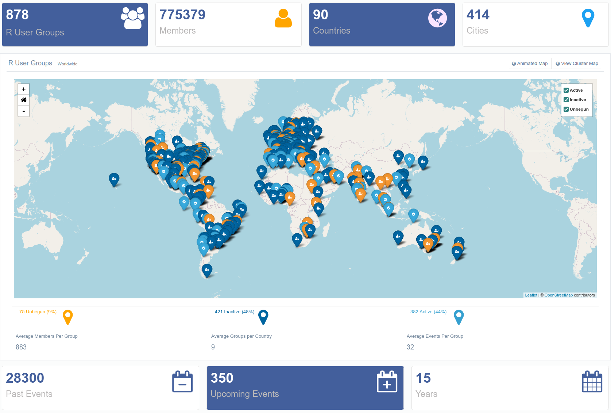

R et RStudio
T. Giraud
2023-01-06
Source de ce document
Hugues Pecout. 2022. “Analyse de données avec R - Contextualisation et présentation de R et Rstudio”. Séance du 14 octobre 2022 du groupe ElementR.
CC BY-SA 4.0
- Code source mis à disposition sur le GitLab d’ElementR :
https://gitlab.huma-num.fr/elementr/session_1/Presentation_R
- Diaporama consultable en ligne via GitLab :
https://elementr.gitpages.huma-num.fr/session_1/Presentation_R/#/
Histoire de R
R se base sur le langage de programmation S, créé en 1988
- 1992: R. Gentleman et R. Ihaka démarrent le développement (projet de recherche)
- 1993: Première version binaire de R publiée sur Statlib
- 1995: R est distribué en tant que logiciel open source, sous licence GPL2
- 1997: Création du R core group. Création du CRAN (par K. Jornik et F. Leisch)
- 1999: Création du site web de R (r-project.org) . Première réunion physique de la R core team
- 2000: R 1.0.0 est publié. John Chambers (créateur du langage S), rejoint la R Core team
- 2001: Création de R News (qui deviendra R Journal)
- 2003: Création de la R Foundation
- 2004: Première conférence UseR! (Vienne)
- 2004: R 2.0.0 est publié
- 2009: Première édition du R Journal
- 2013: R 3.0.0 est plublié
- 2015: Création du R Consortium (avec la participation de la R Foundation)
- 2020: R 4.0.0 est plublié
https://blog.revolutionanalytics.com/2017/10/updated-history-of-r.html
Libre et multi-plateforme
- R est un logiciel/langage libre (open source)
- Il fait partie de la liste des paquets GNU GPLv3
- R est multi-plateforme
| Logiciel/Sytsème | Windows | MacOS | Linux | BSD | Autres Unix |
|---|---|---|---|---|---|
| R | oui | oui | oui | oui | oui |
Développement illimité
R propose 2954 fonctions standard (primitives)
Sur ce socle commun peut s’ajouter de nombreux
packages, mis à disposition sur le
Comprehensive
R Archive Network (CRAN). Ex :
- FactoMineR - analyse multidimensionnelle de données
- quanteda - analyse textuelle
- igraph - analyse de réseau
- sf - manipulation de données spatiales vectorielles
- terra - manipulation de données spatiales (raster et vecteur)
- shiny - applicacions web interactives
- …
R a une structure modulaire qui offre toute une gamme d’applications possibles. Son expansion n’est limitée que par les contributions.
Développement illimité
Nombre de packages disponibles sur le CRAN

Polyvalent
Les packages mises à disposition permettent d’opérer sur l’ensemble de la chaîne de traitement. De la collecte des données à la valorisation des résultats (gaphique, document, site web…)
Cette polyvalence permet à R de compléter, de concurrencer voire de remplacer toute une série de logiciels existants
Polyvalent

Grande communauté d’utilisateurs

…Et d’entreprises

Fiable
- Financement d’acteurs économiques (R Consortium)
- Communauté impliquée et importante
- Le fonctionnement d’un logiciel open source est vérifiable
- Tous les logiciels ont des failles, mais…
L’information circule vite dans les communautés des logiciels libres.
Travaux reproductibles
- Un seul logiciel pour toutes les étapes de traitement
- Les travaux sont facilement archivés et partagés (script)
- Il suffit d’un ordinateur pour les reproduire….
La recherche reproductible, c’est le partage et la transparence !
Inconvénients
- R est un langage de programmation
- Son apprentissage peut être est long
- R et ses ressources clefs sont en anglais
- L’ interface de R est très rudimentaire, mais…
Qu’est-ce que Rstudio?
RStudio (aujourd’hui Posit) est une entreprise qui développe et publie des logiciels et des services basés sur R. C’est l’acteur le plus important de la communauté.
Posit a développé plusieurs packages de référence. Ex :
- dplyr & tidyr (manipulation de tableau)
- stringr (manipulation de chaîne de caractères)
- ggplot2 (représentation graphique)
- rmarkdown (programmation lettrée)
- flexdashboard (tableau de bord)
- shiny (application interactive)
- reticulate (interopérabilité entre R et python)
- plumber (Création d’API)
- …
Posit propose également un Environnement de Développement Intégré nommé RStudio, qui facilite énormément l’utilisation de R.
Interface rudimentaire de R

Interface de R sur Windows

Pas d’interface sur Linux (terminal)
L’IDE RStudio facilite l’apprentissage de R et son utilisation
IDE Rstudio

IDE Rstudio

Autres points forts
- Fonctionnalités clic-bouton
- Raccourcis clavier
- Auto-complétion
- Création de projet
Parce que c’est simple, complet et en constante évolution…
Utilisez l’environnement RStudio!
Besoin d’aide ?
De nombreuses ressources sont référencées sur…

Diaporama réalisé avec…
R version 4.2.2 (2022-10-31)